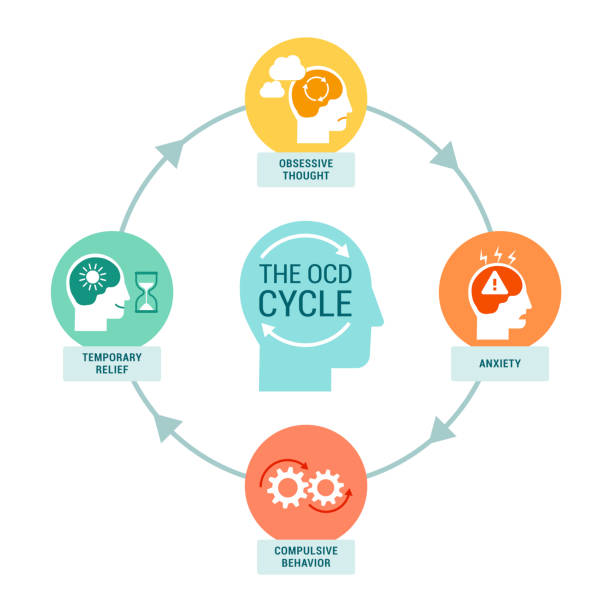

Common Conditions
Note: The exact causes/origins of many of these conditions is still an active area of research. What we can say is that there are both environmental and genetic factors that influence a person's likelihood of being neurodivergent. These conditions and their symptoms can all be found in the The Diagnostic and Statistical Manual of Mental Disorders, Fifth Edition (DSM-5-TR) published by the American Psychiatric Association.
Autism / Autism Spectrum Disorder
Autism Spectrum Disorder (ASD) is a big part of neurodiversity as it encompasses a vast range of divergent behaviors. ASD is a neurological and developmental condition that affects how people interact, communicate, learn, and behave. Although autism can be diagnosed at any age, it is described as a “developmental condition” because symptoms normally appear in the first 2 years of a child's life. It is called Autism Spectrum Disorder because it refers to a range of symptoms and severity levels. One autistic individual will not necessarily have the same experience as another autistic individual.
An estimated 5.4 million people (2.21%) in the US have Autism.
The Autism Spectrum is best understood as a combination of co-occurring symptoms. A person with autism may display some or all symptoms, each to varying degrees.

People diagnosed with Autism often display elevated abilities, including but not limited to:
- Hypersensitivity to sensory details, resulting in greater ability to identify visual patterns, and greater auditory/pitch and olfactory(smell) detection
- Correlation with intellectual giftedness and savant syndrome; where a person with limited cognitive abilities/emotional range has an exceptional ability in a specific area(e.g., music, mathematics).
- Superior Problem Solving/Rational Decison-Making Skills
- Exceptional Memory
The most common symptoms include difficulty with communication and social interactions, avoiding eye contact, obsessive interests, and repetitive behaviors.
Attention-Deficit/Hyperactivity Disorder (ADHD)
NOTE: Attention Deficit Disorder (ADD) is an outdated term that was renamed ADHD in 1987 after the revision of the DSM Third Edition.
ADHD, or Attention-Deficit/Hyperactivity Disorder, is a condition that affects how people focus, control their impulses, and manage their energy levels. Individuals with ADHD often experience ongoing challenges with paying attention, sitting still, and thinking before acting, which can make daily activities—like school, work, or social interactions—more difficult. These patterns of inattention, hyperactivity, and impulsivity are not just occasional behaviors but consistent traits that can impact various areas of daily life. ADHD usually begins in childhood with the average age of diagnosis being 7, but its effects can continue into adulthood, influencing how people manage responsibilities and relationships.
The Three Types of ADHD
Inattentive
Sometimes described as "constant fogginess or feeling of being zoned out." People with this type often struggle to pay attention to details, stay on task, or listen during extended conversations due to their mind constantly wandering/jumping between different thoughts. They may appear forgetful, easily distracted, or daydream frequently. This presentation tends to be less outwardly visible.
Hyperactive/Impulsive
Often described as "a motor inside you that never stops running." People with this type often struggle with sitting still, staying quiet, or waiting turns. They may frequently fidget, talk excessively or interrupt others. These behaviors are more noticeable in structured or quiet settings.
Combined
The combined type of ADHD includes symptoms of both hyperactivity-impulsivity and inattention. People with this presentation may experience difficulty staying focused and organized, while also struggling with impulsive actions, and difficulty staying still. This often results in a multitude of challenges that can affect multiple areas of life, including academics, work, and relationships.
ADHD in Male vs Female Persons
Males: More likely to exhibit hyperactive-impulsive symptoms, such as restlessness, impulsivity, and disruptive behaviors. This makes their ADHD symptoms more noticeable in structured settings like classrooms.
Females: Tend to exhibit more inattentive symptoms, such as daydreaming, forgetfulness, and difficulty staying organized. Hyperactivity, if present, may manifest as internal restlessness rather than overt behavior. These symptoms may be misdiagnosed as anxiety or depression, which can exacerbate feelings of inadequacy and stress.
Because of this difference, males with ADHD are noticed and diagnosed more frequently as their symptoms are more aligned with what people believe ADHD causes.
ADHD in Kids vs Adults
Children: Symptoms often include hyperactivity, impulsivity, and difficulty focusing, such as fidgeting, running or climbing excessively, interrupting others, and trouble following instructions. Diagnoses are often based on observations from parents, teachers, and other caregivers, as symptoms are typically more overt.
Adults: Symptoms may shift to more internal challenges, such as difficulty managing time, sustaining focus, prioritizing tasks, or coping with restlessness. Hyperactivity may manifest as a sense of internal agitation or being "always on the go" rather than overt physical activity. This can also result in procrastination, forgetfulness, or difficulty meeting deadlines, which can lead to stress, anxiety, or feelings of inadequacy. Diagnoses often involve self-reports, retrospective assessments of childhood symptoms, and an evaluation of current challenges.
Dyslexia
Dyslexia is a neurodivergent condition that affects the way individuals process language, making it more challenging to learn to read, spell, and write. It is not linked to intellectual ability, and people with dyslexia often exhibit enhanced creative and visual thinking, strong problem-solving skills, and a remarkable ability to recall information. Below are some of the most common types of dyslexia:

Phonological Dyslexia
(Most common form of Dyslexia)
Difficulty decoding words by sounding them out. This occurs because of challenges in recognizing and manipulating the sounds (phonemes) that make up words, which can impact reading and spelling accuracy.
Rapid Naming Dyslexia
Difficulty quickly naming familiar objects, colors, letters, or numbers. This stems from challenges in processing and retrieving information rapidly, which can slow down reading fluency and comprehension.
Double Deficit Dyslexia
A combination of phonological and rapid naming dyslexia.

Surface Dyslexia
Difficulty recognizing whole words by sight, surface dyslexia forces individuals to rely heavily on sounding out words. This can lead to challenges with reading irregularly spelled words (e.g., "yacht" or "colonel") that don't follow typical phonetic rules.
Auditory Dyslexia
Difficulty processing and interpreting auditory information, auditory dyslexia affects the ability to distinguish and sequence sounds in words. This can lead to challenges with phonics, reading fluency, and spelling.
Attentional Dyslexia
Difficulty focusing on individual words or letters, attentional dyslexia causes letters or words to appear jumbled, misplaced, overlapping or shifting. This makes reading and maintaining focus on texts very challenging.
Dyscalculia
Dyscalculia is a condition that affects a person's ability to understand and work with numbers, similar to how Dyslexia affects reading and writing. When we perform calculations we use areas of our brain that facilitate visual and language processing, short and long term memory, and understanding quantities and calculation. When one of these processes are disrupted, it can cause challenges with arithmetic, recognizing number patterns, understanding concepts like time and measurement, or performing calculations. People with dyscalculia may also struggle with tasks involving spatial reasoning or numerical sequences, such as telling time on an analog clock. However, with targeted support and tools, individuals can develop strategies to manage these challenges effectively.
Obsessive-Compulsive Disorder (OCD)
Obsessive-compulsive disorder (OCD) is a mental health condition characterized by recurring, unwanted thoughts (obsessions) and repetitive behaviors or mental acts (compulsions) that an individual will perform to reduce the feelings of intense anxiety and distress caused by these thoughts. Common obsessions include fears of contamination, intrusive thoughts, or a need for symmetry, while compulsions might involve excessive cleaning, checking, or organizing. These patterns are often time consuming and can significantly interfere with daily life but can be managed through therapy, medication, and coping strategies.
Dyspraxia
Dyspraxia is a condition that affects motor coordination and planning, making it difficult for individuals to perform tasks requiring fine and gross (using larger muscles) motor skills. This can include challenges with activities like writing, tying shoes, or participating in sports. In addition to motor difficulties, dyspraxia can impact speech, balance, and organizational skills, as individuals may struggle with coordinating movements and processing motor tasks efficiently.
Dyspraxia is typically diagnosed in childhood because symptoms are most noticeable when children are first developing their motor skills. While many people find physical/occupation therapy to be effective treatments, for adults the condition may manifest as difficulties with coordination, time management, and organizational tasks.
Since certain tasks are more difficult, individuals diagnosed with dyspraxia often develop strengths such as enhanced creative problem-solving skills, attention to detail and adaptability.
Tourette Syndrome (TS)
Tourette syndrome is one of a group of disorders of the developing nervous system called tic disorders. TS is characterized by repetitive, involuntary movements and vocalizations called tics. The severity and frequency of tics can vary over time, and they often peak during childhood or adolescence. Although there is no cure, treatments such as behavioral therapy, medication, and supportive strategies can help manage symptoms.
We can classify tics into four main categories:
Simple tics are sudden, brief, repetitive movements that involve a few muscle groups. They are more common than complex tics. Simple tics often precede complex tics.
Complex tics are distinct, coordinated patterns of movement involving several muscle groups in different parts of the body.
Complex motor tics might include facial grimacing combined with a head twist and a shoulder shrug. Other complex motor tics may appear purposeful.
- Eye blinking and other eye movements
- Facial grimacing
- Shoulder shrugging
- Head or shoulder jerking
- Sniffing or touching an object
- Hopping
- Jumping
- Bending
- Twisting
- Repetitive throat clearing
- Sniffing
- Barking
- Grunting
- Repeating one's own words or phrases
- Repeating others' words or phrases (echolalia)
- Using vulgar, obscene, or swear words (coprolalia)
Bipolar Disorder (BP)
Bipolar disorder, previously known as manic depression, is a mental health condition characterized by rapid and intense mood swings. These abnormal mood shifts include periods of elevated moods, referred to as mania or hypomania (a milder form of mania), as well as periods of low moods, known as depression.
There are multiple types of bipolar disorders, each with specific symptoms:
- Bipolar I Disorder: A person has had least one manic episode that may come before or after hypomanic or major depressive episodes. In some cases, mania may cause a break from reality (psychosis).
- Bipolar II Disorder: A person has had at least one major depressive episode and at least one hypomanic episode. But you've never had a manic episode.
- Cyclothymia: A person had at least two years — or one year in children and teenagers — of many periods of hypomania symptoms and periods of depressive symptoms. These symptoms are less severe than major depression.
- Other types. Bipolar and related disorders caused by certain drugs or alcohol, or due to a medical condition, such as Cushing's disease, multiple sclerosis or stroke.
Epilepsy
Epilepsy is a neurological disorder characterized by recurring seizures caused by abnormal electrical activity in the brain. Seizures are brief episodes of involuntary movement that may involve a part of the body (partial) or the entire body (generalized). Seizures vary widely in type and severity, ranging from brief lapses in awareness (absence seizures) to convulsions and loss of consciousness (tonic-clonic seizures). Epilepsy is typically managed with medications, lifestyle adjustments, and, in some cases, surgical interventions.
Epilepsy affects around 50 million people worldwide, making it one of the most common neurological disorders globally. Nearly 80% of individuals with epilepsy live in low- and middle-income countries, where access to treatment is often limited—three-quarters of those affected in these regions do not receive the care they need. However, it is estimated that up to 70% of people with epilepsy could live seizure-free with proper diagnosis and treatment. Despite its manageability, epilepsy is associated with a risk of premature death up to three times higher than that of the general population, highlighting the urgent need for improved access to care and resources.